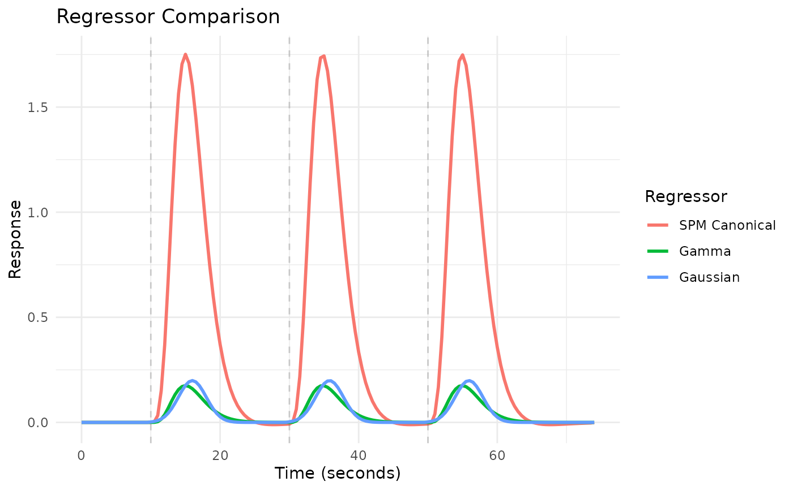
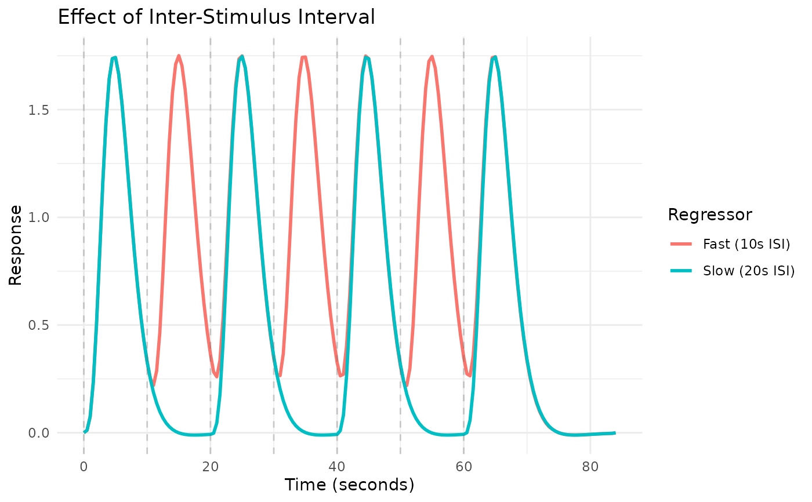
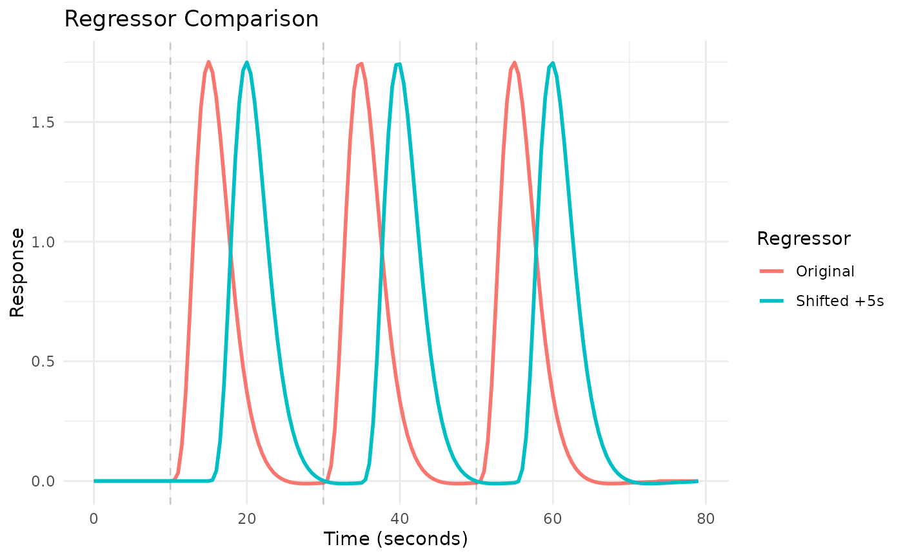

Creates a comparison plot of multiple regressor objects. This function provides a convenient way to visualize different regressors on the same plot, with options for showing event onsets and customization. Uses ggplot2 if available for publication-quality figures, otherwise falls back to base R graphics.
Usage
plot_regressors(
...,
grid = NULL,
labels = NULL,
title = NULL,
subtitle = NULL,
show_onsets = "first",
onset_alpha = 0.3,
precision = 0.33,
use_ggplot = TRUE
)Arguments
- ...
Regressor objects to compare. Can be passed as individual arguments or as a named list.
- grid
Numeric vector of time points for evaluation. If NULL (default), automatically generates a grid covering all regressors.
- labels
Character vector of labels for each regressor. If NULL (default), uses "Regressor_1", "Regressor_2", etc.
- title
Character string for the plot title. If NULL (default), uses "Regressor Comparison".
- subtitle
Character string for the plot subtitle. If NULL, no subtitle.
- show_onsets
Logical or character. If TRUE, show onset lines for all regressors. If "first", show only for the first regressor. If FALSE, hide onsets. Default is "first".
- onset_alpha
Alpha transparency for onset lines. Default is 0.3.
- precision
Numeric sampling precision for HRF evaluation. Default is 0.33.
- use_ggplot
Logical; if TRUE and ggplot2 is available, use ggplot2 for plotting. If FALSE, use base R graphics. Default is TRUE.
Value
Invisibly returns a data frame in long format with columns 'time', 'Regressor', and 'response'.
Examples
# Create regressors with different HRFs
onsets <- c(10, 30, 50)
reg1 <- regressor(onsets, HRF_SPMG1)
reg2 <- regressor(onsets, HRF_GAMMA)
reg3 <- regressor(onsets, HRF_GAUSSIAN)
# Compare regressors
plot_regressors(reg1, reg2, reg3,
labels = c("SPM Canonical", "Gamma", "Gaussian"))

# Compare regressors with different event timings
reg_fast <- regressor(seq(0, 60, by = 10), HRF_SPMG1)
reg_slow <- regressor(seq(0, 60, by = 20), HRF_SPMG1)
plot_regressors(reg_fast, reg_slow,
labels = c("Fast (10s ISI)", "Slow (20s ISI)"),
title = "Effect of Inter-Stimulus Interval")

# Compare original vs shifted regressor
reg_orig <- regressor(c(10, 30, 50), HRF_SPMG1)
reg_shifted <- shift(reg_orig, 5)
plot_regressors(reg_orig, reg_shifted,
labels = c("Original", "Shifted +5s"))
